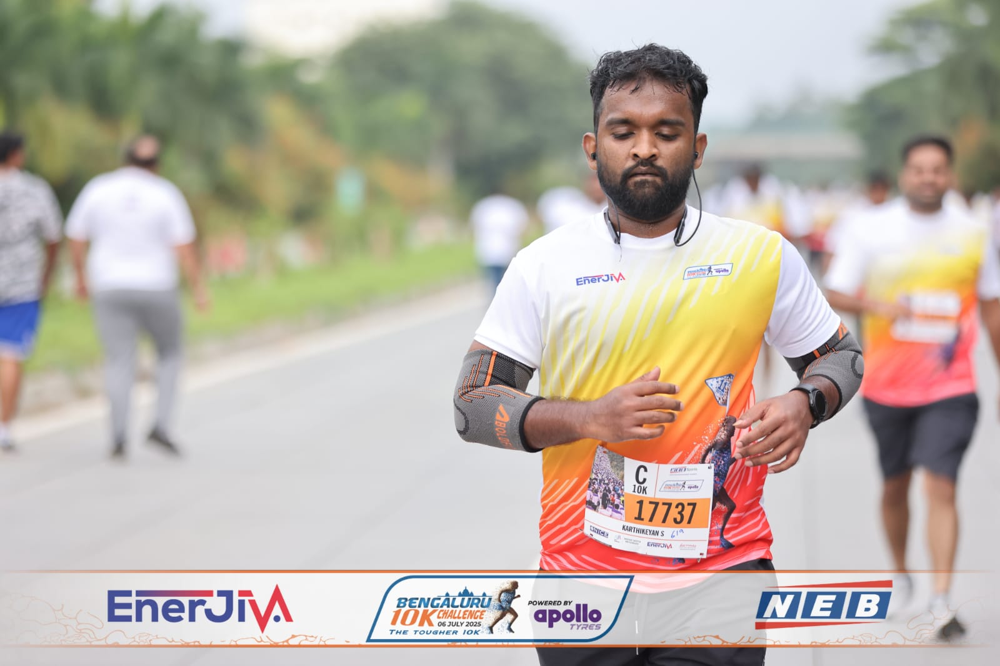
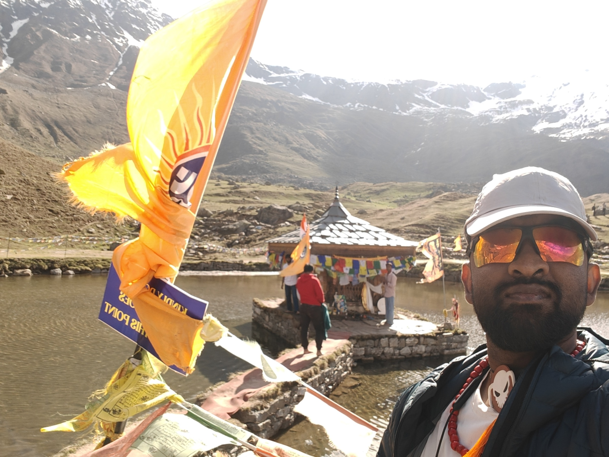

BIB #17737 · BLR 10K '25Bengaluru, Karnataka
“First half in 3:15. 10K in 1:16. Chasing sub-3:30 marathon.”
Best time raced at each distance — race PB up top, training-run PB tucked underneath.
Lifetime and year-to-date, pulled from the training log.
Every start line so far. Filter, sort, tap a row for the full story.

Between race blocks — miles wherever the ground is.training in the wild · Himalayan trek
Moments worth marking on the way to the marathon.
Currently training for